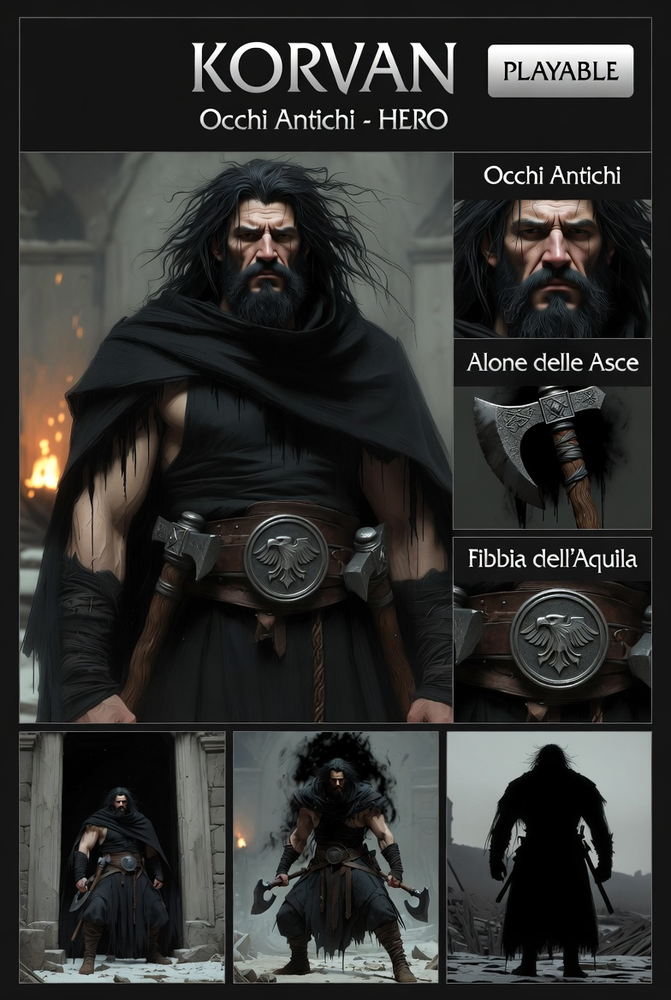

Occhi Antichi — HERO
Giocare con Korvan è sapere che qualcuno ha già deciso di farti da scudo. Senza essere stato chiesto.
⬡ DA IMPLEMENTARE#0D0D0D#888888#5C3D22| Zona | Hex | Anteprima |
|---|---|---|
| Pelle base | #8B6B50 | |
| Ombre pelle | #6B4E38 | |
| Capelli / barba | #1A1A1A | |
| Capelli highlight | #2A2A2A | |
| Mantella (nero pece) | #0D0D0D | |
| Mantella ombra | #080808 | |
| Mantella highlight | #1C1C1C | |
| Canottiera | #111111 | |
| Cintura pelle | #5C3D22 | |
| Cintura highlight | #7A5030 | |
| Fibbia dell'Aquila | #888888 | |
| Ascia — metallo | #666666 | |
| Ascia — filo | #9A9A9A | |
| Ascia — manico | #3D2810 | |
| Alone nero (combat) | #050505 |
| Elemento | Descrizione |
|---|---|
| Mantella | Nero pece — inghiotte la luce invece di rifletterla |
| Capelli / barba | Lunghi, stesso nero della mantella |
| Fibbia cintura | Aquila in rilievo su metallo scuro — segno identificativo |
| Occhi | Scuri e pesanti — antichi nel peso, non nel colore |
| Espressione | Maschera di pietra — neutra quasi sempre |
| Alone combat | Nero che cola dalle spalle lungo le braccia fino alle asce |
Tank / Intercettore — Support attivabile (Story Mode)
| Comportamento | Dettaglio |
|---|---|
| Attivazione | Chiamato da Aetherion — entra, agisce, esce |
| Priorità | Nemici che minacciano direttamente Aetherion |
| Assorbimento danni | Si interpone fisicamente — scudo corporeo |
| Alone nero | Potenzia le asce in combattimento — meccanica visiva attiva |
| Ritiro | Automatico al termine dell'intervento — senza dialogo |